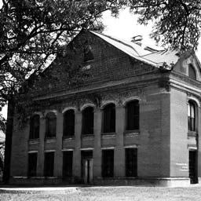
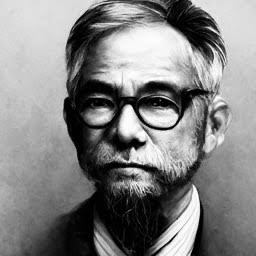

旧校舎の画像(1910)

初代校長 一番合戦 貞政(1905)
| 元号 | 年代 | 出来事 |
|---|---|---|
| 明治 | 38年 | 杉谷小学校設立認可 |
| 39年 | 東京市杉谷尋常小学校として開校。初代校長 一番合戦 貞政。 | |
| 42年 | 校歌制定。 | |
| 44年 | 校章制定。 | |
| 大正 | 10年 | 初代校長 一番合戦貞政 退職。２代目校長をくじ引きにより選出。当時６年生の主任教諭だった督 雅大佳(とく まさたか）に決定。 |
| 17年 | 校舎焼失。児童は隣接する４学区で授業を受ける。 | |
| 昭和 | 25年 | 科学技術評議会設立 |
| 47年 | 郷土資料「かがやく桜野」出版 | |
| 平成 | 12年 | 基礎学力向上のための要項まとめ |
| 17年 | 開校100年記念式典開催。 | |
| 令和 | 2年 | SDGsに関する声名発表 |